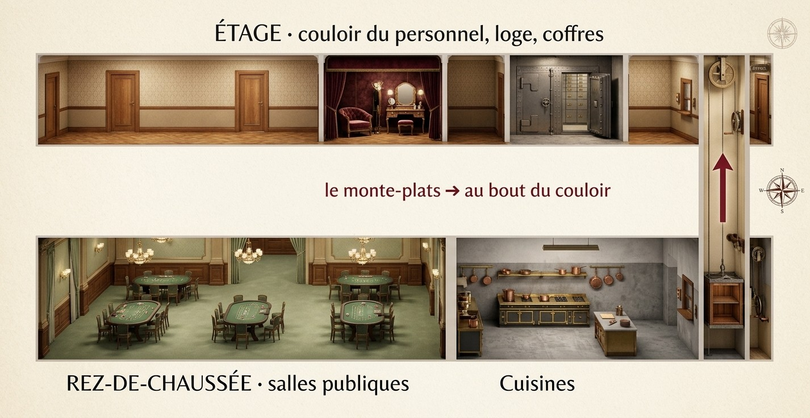

Document secret · ne se montre pas, il se raconte🧠 Le Cerveau
Le plan
CONFIDENTIEL - À BRÛLER APRÈS LECTURE
OBJECTIF : l'Œil du Nil (42 carats, rose).
OÙ : coffre Fichet, salle des coffres,
au bout du COULOIR DU PERSONNEL.
QUAND : depuis 22 h 45 il dort au coffre.
0 h 00 : Pujol ouvre le coffre (contrôle).
=> on a jusqu'à minuit, pas une minute de plus.
ÉTAPES
1. Entrer au Salon d'Or (carton d'invitation : voir le Faussaire).
2. Gagner la confiance de Pujol (notre "comte" : voir le Beau Parleur).
3. Le couloir exige un JETON DE SERVICE (les croupiers en ont un).
4. La combinaison : Pujol la garde dans un petit carnet de cuir.
La Perceuse s'occupe des disques qu'on peut écouter.
5. On ressort avec le sourire.
RÈGLES DE LA BANDE
- On ne montre JAMAIS la marchandise à personne.
- On ne court pas. On ne crie pas. On sourit.
- Si ça sent le roussi : Plan B. (C'est moi.)
Votre pouvoir · Plan B (1 fois) : juste après une hausse du Soupçon, posez votre carte sur le plateau. Cette hausse est annulée.
Document secret · ne se montre pas, il se raconte🔩 La Perceuse
Coffre Fichet · modèle 1925
Extrait de la notice du fabricant, « pour messieurs les banquiers ».
Trois disques, gradués de 00 à 99, à régler l'un après l'autre.
Les disques 1 et 2 possèdent un cliquet : au bon chiffre, il tombe avec un « clac » net, perceptible à l'oreille exercée.
Le disque 3 est insonorisé (brevet Fichet). Impossible de l'écouter : il faut connaître son chiffre.
Note pour moi-même : tourner TRÈS lentement. Un « tic » à chaque cran, un « CLAC » au bon. Pour le troisième, compter sur le carnet du directeur…
Votre pouvoir · Stéthoscope : dans la salle des coffres, mettez le 🎧 casque. Vous seul·e entendez les disques. Annoncez les chiffres aux autres.
Document secret · ne se montre pas, il se raconte✒️ Le Faussaire
◆ CASINO DE LA RIVIERA ◆
Gala du baron de Valcourt
Samedi 18 août 1928 · tenue de soirée
Monsieur le comte Alexis Orlov
N° 428
Votre plus beau faux. Le sergent à l'entrée ne regardera que le numéro.
Reconnaître un vrai diamant
Épreuve
Vrai diamant
Strass (verre)
La buée (on souffle dessus)
Disparaît aussitôt
Reste plusieurs secondes
La lime
Rien ne le raye
Se raye facilement
Le poids
Lourd pour sa taille
Plus léger qu'un diamant de même taille
Rappel : 1 carat = 0,2 gramme. Un diamant de 42 carats pèse donc… à vous de compter. Une pierre trop légère, c'est du verre.
Vos pouvoirs · Expertiser (3 fois) : votre carte sur QUI, un objet sur QUOI. · Faux papiers (1 fois) : glissez votre carte quand on vous demande un laissez-passer.
Document secret · ne se montre pas, il se raconte🤸 L'Acrobate
Les passages du casino

Le monte-plats des cuisines monte jusqu'au couloir du personnel, juste à côté de la loge et des coffres. On y tient à une personne, recroquevillée. Une seule fois : à la deuxième, les cuisiniers comprendront.
Votre pouvoir · Monte-plats (1 fois) : au couloir du personnel, glissez votre carte pour éviter l'épreuve des rondes.
Document secret · ne se montre pas, il se raconte🃏 Le Pickpocket
Mes repérages
• Albert, le croupier : un jeton de service en laiton, poche du gilet. Facile.
• Pujol, le directeur : un petit carnet de cuir, poche intérieure gauche. Il le tapote sans arrêt.
• Le baron : une lettre parfumée, poche de poitrine. Il la relit en soupirant.
• Mattei : menottes et sifflet. Pas touche.
• Lady Pembroke : une lorgnette. Rien d'autre.
• La chanteuse : son sac ne la quitte jamais. Elle a des yeux partout. Prudence…
Votre pouvoir · Faire les poches (3 fois) : personnage sur QUI, votre carte sur QUOI. Chaque tentative fait monter le Soupçon (+1). Si les poches contiennent quelque chose, le pupitre vous indique une enveloppe.
Document secret · ne se montre pas, il se raconte💋 Le Beau Parleur
Votre couverture
Nom
Comte Alexis Orlov
Né le
12 mai 1889
À
Odessa
Émigré
à Paris en 1920
Arrivé
ce matin, par le Train Bleu
Hôtel
Hôtel de Paris, chambre 112
Fortune
pétrole de Bakou
Passions
chevaux de course, baccara
Les gens du casino adorent les comtes russes. On vous posera des questions : répondez sans hésiter, avec l'accent si vous l'osez. Les autres comptent sur vous pour leur souffler les bonnes réponses.
Votre pouvoir · Belle parole (1 fois) : glissez votre carte, le Soupçon baisse de 3.